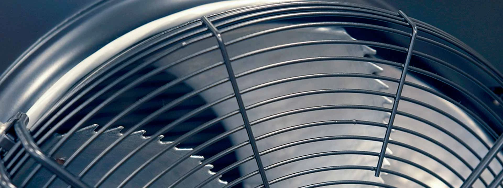
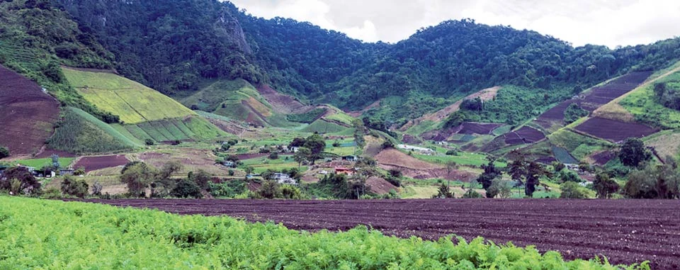
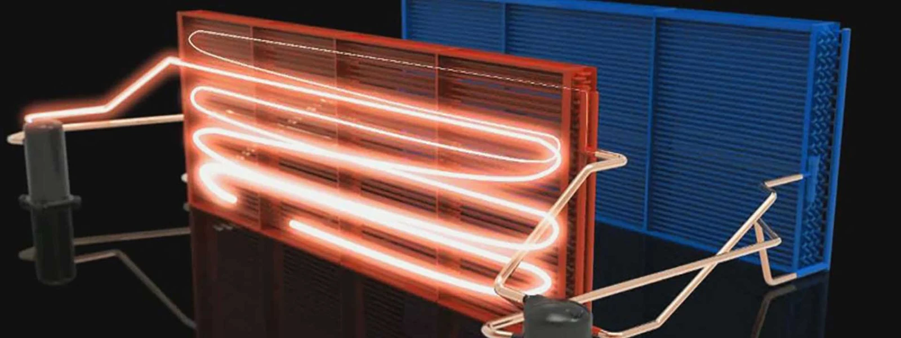

Cooling from field to factory.
Custom refrigeration for growers, food processors and industry. Designed and built in Brantford, Ontario.
Fan assembly



Cooling by market
A potato pile, a fermentation tank and a cut flower room each need different conditions. Find the equipment that suits your operation.
Explore all markets
When the harvest cools down, so can the compressors.
DUAL-KOOL can switch off one compressor as the load falls while keeping the full coil surface in use. For cold rooms with suitable outdoor conditions, FREE COOLING can use outside air.
Tell us what you need to cool.
Start with your product, room dimensions and target temperature.